ELO320 - Estructuras de Datos y Algoritmos
Marie González-Inostroza
#include<stdio.h>
#include<stdlib.h>
int main(int argc, char **argv){
int *arreglo=NULL, i;
arreglo = malloc(10 * sizeof *arreglo);
if(arreglo==NULL){
printf("Error al reservar memoria...\n");
return -1;
}
for(i=0;i<5;i++){
arreglo[i]=i+1;
}
arreglo = realloc(arreglo, 5 * sizeof(int));
for(i=0;i<5;i++){
printf("%d ", arreglo[i]);
}
free(arreglo);
return 0;
}
Completa el código para modificar el tamaño de un arreglo de ints y eliminar un elemento.
El código base está en Classroom: https://classroom.github.com/a/TTF95M2o
struct permite agrupar variables bajo un mismo nombre.. (para variables) o ->
(para punteros).
#include <stdio.h>
struct Estudiante {
char nombre[50];
char apellido[50];
float nota;};
int main() {
struct Estudiante e1;
strcpy(e1.nombre, "Maria");
strcpy(e1.apellido, "Gonzalez");
e1.nota = 7.0;
printf("%s %s - %.2f\n", e1.nombre, e1.apellido, e1.nota);
return 0;
}
Con typedef creamos un alias y evitamos escribir struct al declarar variables.
#include <stdio.h>
#include <string.h>
typedef struct {
char nombre[50];
char apellido[50];
float nota;
} Estudiante;
int main() {
Estudiante e1; // no necesitamos escribir 'struct'
strcpy(e1.nombre, "Pedro");
strcpy(e1.apellido, "Perez");
e1.nota = 8.5;
printf("%s %s - %.2f\n", e1.nombre, e1.apellido, e1.nota);
return 0;
}
Estudiante *ptr = malloc(sizeof(Estudiante));
strcpy(ptr->nombre, "Ana");
ptr->nota = 9.0;
printf("%s - %.2f\n", ptr->nombre, ptr->nota);
free(ptr);
Con typedef, el uso de punteros es más legible y no necesitamos escribir struct.
typedef struct {
char nombre[50];
char apellido[50];
float nota;
} Estudiante;
void modificar_por_valor(Estudiante e) {
e.nota = 7.0; // solo copia
}
void modificar_por_referencia(Estudiante *e) {
e->nota = 7.0; // modifica original
}
Completa el código base.
El código base está en Classroom: https://classroom.github.com/a/r9knwaUC
main contiene dos argumentos: argc y argv.
#include<stdio.h>
int main(int argc, char **argv){ //o *argv[]
return 0;
}
#include<stdio.h>
int main(int argc, char **argv){ //o *argv[]
if(argc!=3){
printf("Debe ingresar 3 parámetros, intentelo nuevamente");
return -1; // exit(-1) si terminar proceso.
}
printf("Argumento 0: %s\n", argv[0]);
printf("Argumento 1: %s\n", argv[1]);
printf("Argumento 2: %s\n", argv[2]);
return 0;
}
#include<stdio.h>
#include<stdlib.h>
int main(int argc, char **argv){ //o *argv[]
if(argc!=4){
printf("Debe ingresar 4 parámetros, intentelo nuevamente");
return -1;
}
int a;
sscanf(argv[2], "%d", &a);
printf("%d %d %ld\n", atoi(argv[1]), a, strtol(argv[3], NULL, 10));
return 0;
}
FILE para abrir streams a archivos.fopen() abre el stream; fclose() lo cierra."r" (lectura), "w" (escritura, sobrescribe), "a" (anexar); agregar + habilita lectura y escritura.
FILE *arch;
arch = fopen("archivo.txt", "r"); // apertura stream
// ... operaciones ...
fclose(arch); // cierre obligatorio
Material de apoyo asíncrono: ManejoArchivos.html
fprintf(): con formatofputs(): stringfputc(): caracterfscanf(): con formatofgets(): línea (hasta \n)fgetc(): caracter
#include<stdio.h>
int main(int argc, char **argv){
FILE *arch = fopen("test.txt", "r");
char linea[256];
while(fgets(linea, 256, arch) != NULL){
fprintf(stderr, "%s", linea);
}
fclose(arch);
return 0;
}
A diferencia de Python, en C se puede manejar el puntero del archivo:
rewind(): iniciofseek(): mueve n bytesftell(): posición actualfgetpos(): guarda posición en fpos_tfsetpos(): mueve a posición guardadaExisten variados streams en C:
scanf(), printf()sscanf(), sprintf()fscanf(), fprintf()ELO320 - Estructuras de Datos y Algoritmos
Marie González-Inostroza
int) con operadores aritméticos.
Modelo que define un conjunto de datos y las operaciones posibles, sin importar la implementación.
Interfaz de operaciones de una lista:
crear_lista()insertar(lista, pos, valor)eliminar(lista, pos)buscar(lista, valor)imprimir(lista)La implementación puede variar (arreglos, listas enlazadas, etc.).
Permiten:
Es un TDA que enlaza nodos a través de punteros.
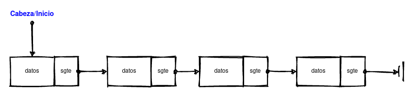
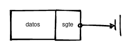
struct nodo {
int dato; // dato
struct nodo *sgte; // puntero a un nodo
};
typedef struct le_nodo {
float datos[20];
struct le_nodo *sgte;
} nodo_t;
#include
typedef struct nodo {
int dato;
struct nodo *sgte;
} nodo_t;
int main() {
nodo_t *inicio = NULL;
// Lista vacía []
return 0;
}
En grupos de a 3 personas, deberán identificar a qué corresponde cada función en el código y cada diagrama para la interfaz de una lista enlazada. El código y los diagramas están desordenados. Las funciones disponibles son:
void first_node(nodo_t **cabeza, int dato){
nodo_t *nuevo = malloc(sizeof(nodo_t));
nuevo->dato = dato;
nuevo->sgte = NULL;
*cabeza = nuevo;
}
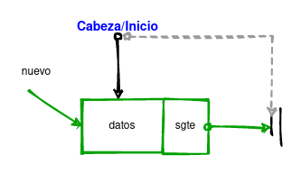
void add_first(nodo_t **cabeza, int dato){
nodo_t *nuevo = malloc(sizeof(nodo_t));
nuevo->dato = dato;
nuevo->sgte = *cabeza;
*cabeza = nuevo;
}
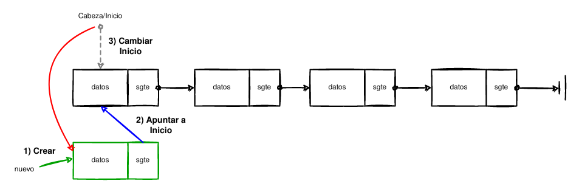
// no se modifica inicio, no es necesario **
void add_middle(nodo_t *cabeza, int dato, int pos){
nodo_t *nuevo = malloc(sizeof(nodo_t));
nuevo->dato = dato;
nodo_t *recorredor = cabeza;
for(int cont=0; contsgte;
nuevo->sgte = recorredor->sgte;
recorredor->sgte = nuevo;
}
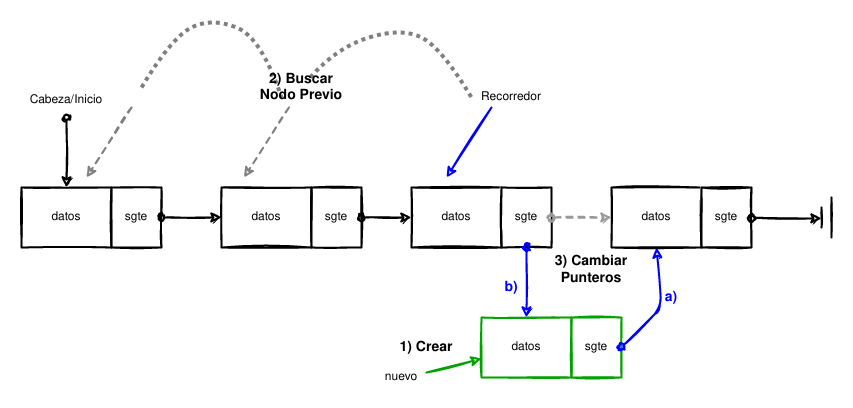
void append(nodo_t *cabeza, int dato){
nodo_t *nuevo = malloc(sizeof(nodo_t));
nuevo->dato = dato;
nodo_t *rec = cabeza;
while(rec->sgte!=NULL)
rec = rec->sgte;
nuevo->sgte = rec->sgte;
rec->sgte = nuevo;
}
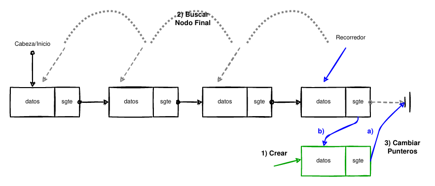
int list_len(nodo_t *cabeza){
int cont;
nodo_t *rec = cabeza;
for(cont=0; rec!=NULL; cont++)
rec = rec->sgte;
return cont;
}
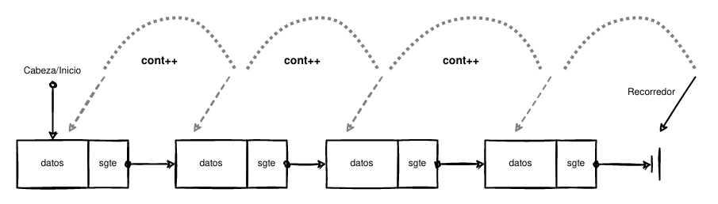
void print_list(nodo_t *cabeza){
nodo_t *rec = cabeza;
int cont=0;
printf("--- Print Lista ---\n");
for(; rec!=NULL; cont++){
printf("Lista pos %d, valor: %d\n", cont, rec->dato);
rec = rec->sgte;
}
printf("--- Fin Lista ---\n\n");
}
void free_list(nodo_t *cabeza){
nodo_t *rec = cabeza;
while(rec!=NULL){
cabeza = rec->sgte;
free(rec);
rec = cabeza;
}
}
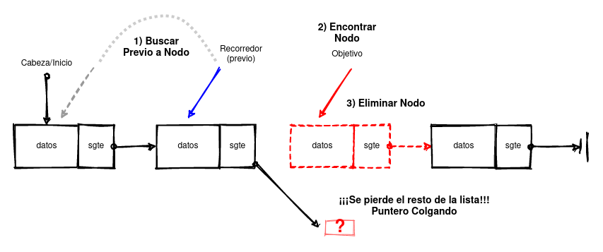
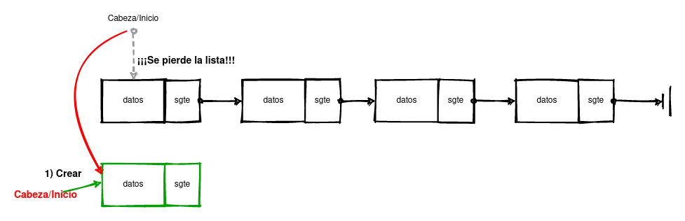
Existen otras implementaciones de listas enlazadas simples, donde se incluyen más punteros y variables de control.
#include
typedef struct nodo{
int dato; //dato, puede ser lo que uds. necesiten
struct nodo *sgte; // puntero a un nodo enlace.
} nodo_t;
typedef struct list{
nodo_t * inicio;
nodo_t * final;
int largo;
} lista;
int main(int argc, char **argv){
lista *L = malloc(sizeof(lista));
L->inicio = NULL;
L->final = NULL;
L->largo = 0;
// Equivalente a lista vacía []
// ¿Para que sirve esta nueva forma?
// Implemente las funciones de ésta clase considerando esta forma.
free(L);
return 0;
}
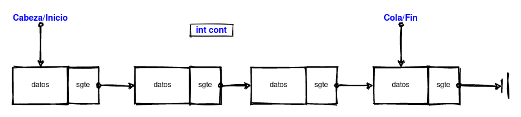
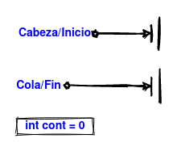